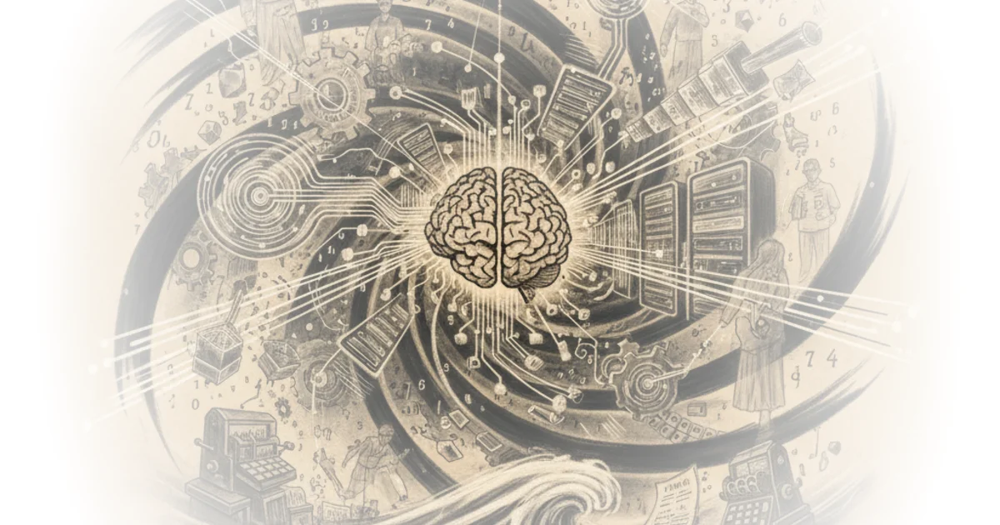

The Goalposts Have Already Moved
Noah Smith, the economist and prolific Substack writer, opens with a provocation that deserves serious engagement: superintelligence is not some future milestone to be forecast on prediction markets. It is already here. The argument hinges on a redefinition, one that is both linguistically clever and substantively defensible.
Smith traces a pattern in how humans talk about intelligence. A century ago, raw calculation and memory would have counted. Computers obliterated that standard. So the definition shifted to pattern recognition, natural language, reasoning. Now that large language models handle those tasks at roughly human level, the goalposts are moving again.

We started to use the word "intelligence" to refer to the things machines still couldn't do — various forms of pattern-matching, logical reasoning, communicating through natural language, and so on.
The rhetorical move is sharp. If the definition of intelligence keeps retreating to whatever machines cannot yet do, then by construction, no machine will ever be "intelligent." Smith wants to break that cycle by arguing that the combination matters more than any single capability.
Jagged but Dominant
One of the article's strongest sections addresses the "jagged intelligence" concept. Smith does not claim AI surpasses humans at everything. He explicitly concedes that it does not. What he argues, with considerable force, is that this objection misses the point entirely.
Did you know that chimps are better than humans at game theory and have better working memory? My rabbit can distinguish sounds much more sensitively than I can. If we were capable of creating business contracts with chimps and rabbits, we might even pay them for these services.
The analogy is vivid and effective. Humans dominate the planet despite cognitive inferiorities to other species in specific areas. Why should AI need to beat humans at literally everything before we acknowledge its superiority in aggregate?
Smith identifies the real source of AI's power as the fusion of two capabilities: roughly human-level language and reasoning, combined with the pre-existing computational superpowers that machines have always possessed.
AI can already do language and concepts and pattern recognition well enough, while also being able to do all the superhuman, fantastic, incredibly powerful things that a computer could do in 2021.
This framing is genuinely useful. It reorients the conversation from "when will AI match humans on benchmarks?" to "what can the hybrid capability already accomplish?"
The Science Case
The bulk of Smith's article marshals evidence that AI is already accelerating scientific research. The most compelling example involves the Erdos Problems, a set of roughly 1,179 mathematical conjectures, many of which have lingered unsolved for decades simply because no human found them interesting enough to prioritize.
Smith quotes Terence Tao, widely regarded as the world's greatest living mathematician, who sees something genuinely new in how AI approaches these problems:
Humans would not systematically go through all 1,000 problems and pick the 12 easiest ones to work on, which is kind of what the AIs are doing.
The insight here is about the allocation of intelligence, not just its level. Human researchers are scarce, status-motivated, and easily bored. AI has none of these constraints. It will happily grind through tedious cases that no tenure-track professor would touch.
We are basically seeing AIs used on par with the contribution that I would expect a junior human co-author to make, especially one who's very happy to do grunt work and work out a lot of tedious cases.
Smith extends this beyond mathematics. He cites OpenAI's collaboration with Ginkgo Bioworks on protein engineering, where an AI-driven closed loop cut production costs by 40 percent and compressed what would have been 150 years of traditional lab work into weeks. He references climate scientist Zeke Hausfather, economist John Cochrane, and political scientist Andy Hall, all describing concrete productivity gains.
The Star Trek Theory of Intelligence
Perhaps the most intellectually interesting passage in the article is Smith's speculation that AI may never dramatically surpass humans at taste, judgment, and intuition. He suggests these capabilities may be near theoretical maximums for any information-processing system, biological or digital.
It seems possible that humans are simply incredibly specialized in a few types of cognitive tasks — extracting patterns from sparse data, synthesizing various patterns into "intuition" and "judgement", and communicating those patterns in language — and that we've basically approached the theoretical maximum in those narrow areas.
He compares this to the AI in Star Trek: The Next Generation, where the ship's computer and the android Data are human-equivalent in conversation and judgment but vastly superior in computation and recall. It is a charming reference, and it maps surprisingly well onto the current state of affairs.
This is where a counterpoint is warranted, though. Smith's claim that humans may be at the "theoretical maximum" for sparse-data pattern recognition is an empirical assertion dressed as a possibility. There is no mathematical proof that biological neural networks have reached any such ceiling, and the history of such claims about human uniqueness has not been kind to the claimants. It is entirely possible that future AI systems will handle ambiguity, taste, and social reasoning far better than the best humans, and that the current plateau is a training limitation rather than a fundamental one.
The Burden of Knowledge
Smith's strongest argument comes near the end, drawing on the concept of the "burden of knowledge" in science. As the total body of human knowledge grows, it takes longer for each individual scientist to reach the frontier. Nobel laureates are getting older. Cross-disciplinary synthesis is nearly impossible for any one person.
A commenter, a working theoretical physicist, captures this perfectly in a passage Smith highlights:
I ask, 'does concept X exist in any other disciplines?' as a meta-literature search. It then says 'Yes, in field A it called X, in field B it is called Y, in field C it is called Z...' and then lists 3 other fields. This is a jaw dropping act of SYNTHESIS.
This is where Smith's argument is most convincing. The bottleneck in modern science is not raw intelligence but the sheer impossibility of any single mind spanning the literature. AI does not need to be smarter than a human scientist to be transformative. It just needs to have read everything, remember it all, and make connections across fields that no specialist could.
What the Optimism Leaves Out
Smith acknowledges AI risks in passing, linking to his own previous writing on the subject. But the article is fundamentally an optimist's case, and it sidesteps some hard questions.
He notes that scientific publications are surging but concedes much of the output "seems to be low-quality slop." He mentions that unscrupulous researchers can use AI to p-hack their way to false results. These are not minor caveats. If AI multiplies the volume of scientific output by ten but also multiplies noise, fraud, and irreproducibility by the same factor, the net effect on actual knowledge production is far from obvious. Smith waves at this problem but does not engage with it seriously, preferring to assert that in "a few months, and certainly in a few years," the benefits will be clear.
That is optimism, not analysis. The peer review system was already under severe strain before AI. Flooding it with AI-assisted submissions, even well-intentioned ones, could break it entirely before the promised golden age arrives.
Bottom Line
Smith's central reframing is valuable: stop asking when AI will beat humans at everything and start asking what the combined human-AI system can already do. The answer, based on the evidence he assembles, is striking. AI is solving long-neglected mathematical problems, compressing decades of lab work into weeks, and bridging disciplinary silos that no human mind could span alone.
The article is at its best when it lets the scientists speak for themselves, particularly Tao, whose clear-eyed assessment of AI as a tireless junior collaborator is more persuasive than any philosophical argument about the nature of intelligence. It is weaker when it speculates about theoretical ceilings on human cognition and when it glosses over the serious quality-control problems that AI-accelerated science will inevitably create.
But the core claim stands. Whether or not one accepts the label "superintelligence," the practical capabilities Smith describes are real, they are here now, and they are already reshaping how research gets done. The interesting question is no longer whether AI will transform science. It is whether human institutions can adapt fast enough to harness the transformation without drowning in the noise it generates.